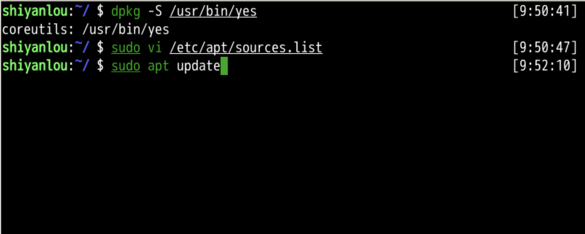
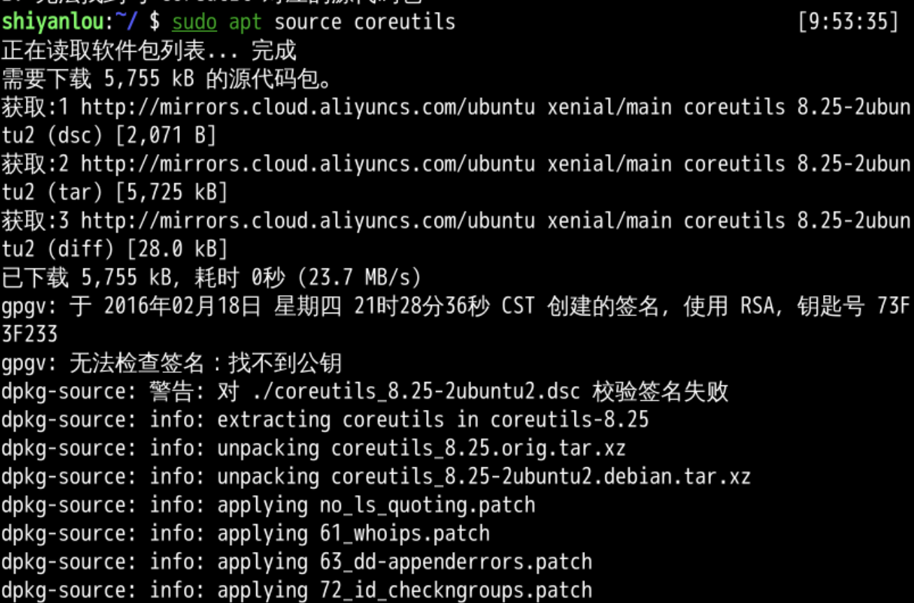
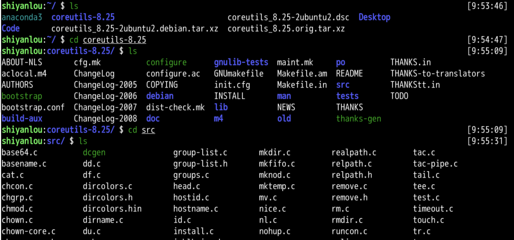
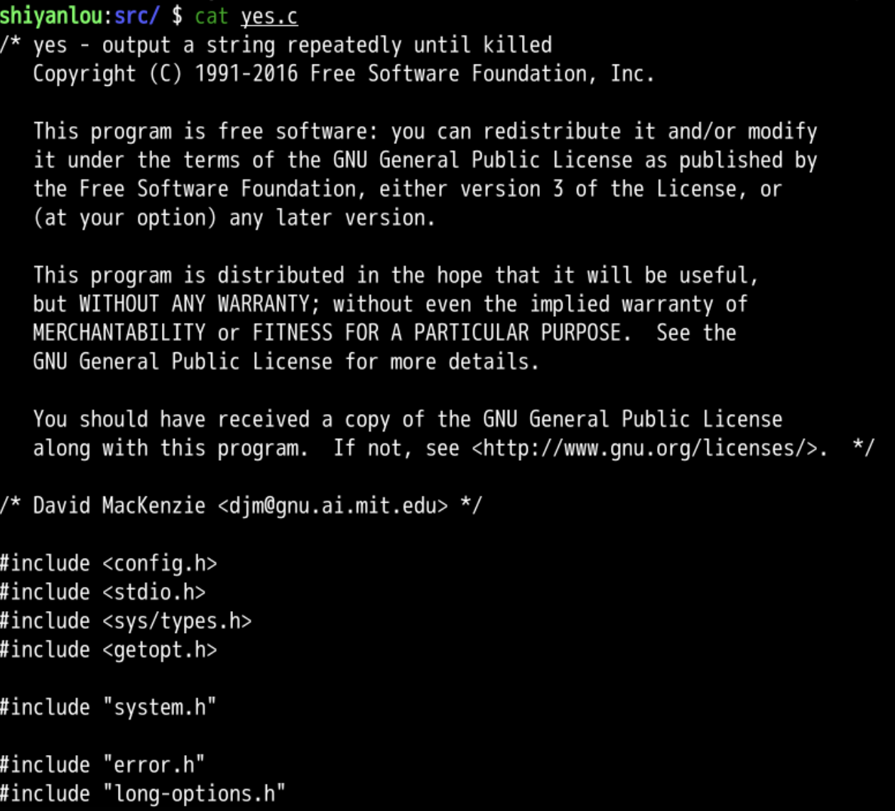
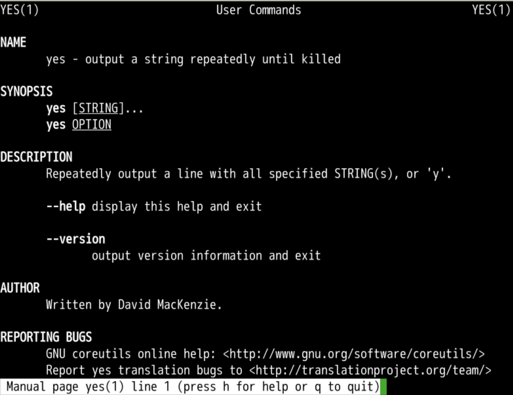
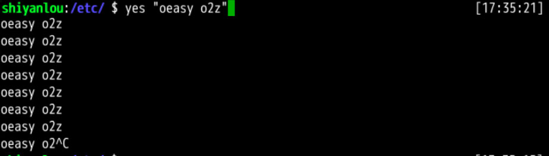
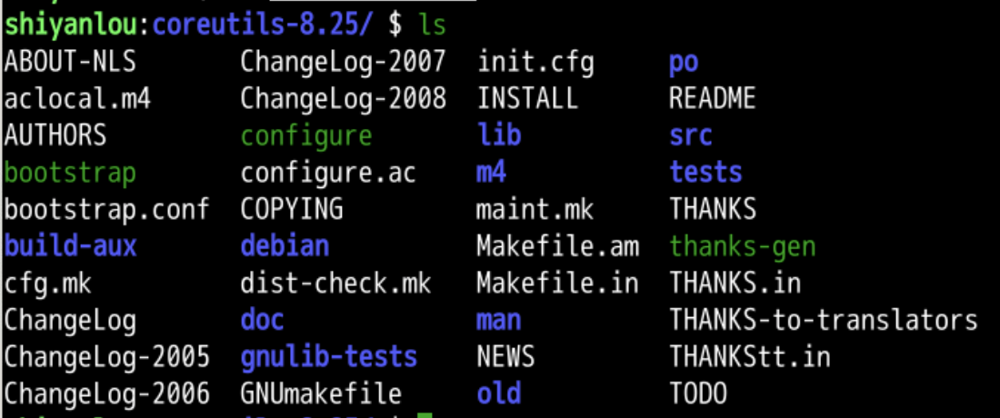
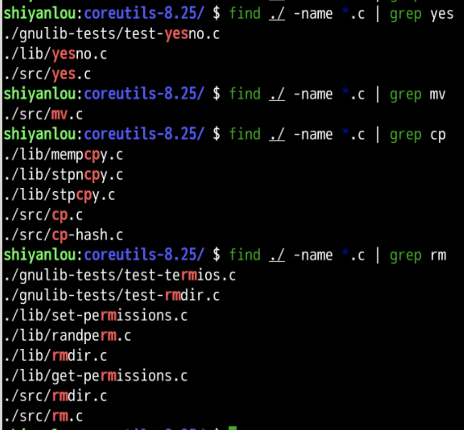
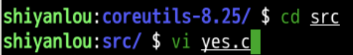
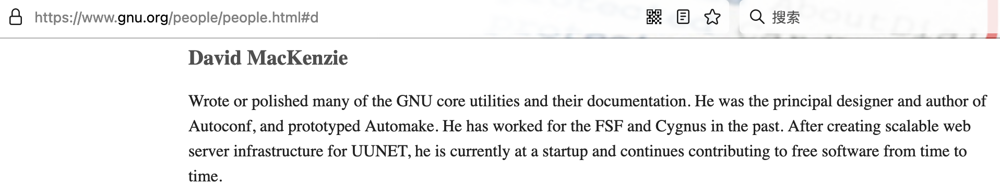

上一部分我们都讲了什么？
接下来
yes
😱 是的！🤪
那怎么让他停下来？😫
whatis yes
whereis yes
which yes
下面我们来解析一下：
yes 就是持续输出




man yes

--version
比如：
yes --help
我们可以得出结论：
手册 man 📕 最详尽 👍
yes --help 稍显简略whatis yes 一句话最简略yes oeasy
yes "oeasy o2z"

oeasy o2z 是作为一个字符串一起被输出的
去找找



/* yes - output a string repeatedly until killed
Copyright (C) 1991-2016 Free Software Foundation, Inc.
This program is free software: you can redistribute it and/or modify
it under the terms of the GNU General Public License as published by
the Free Software Foundation, either version 3 of the License, or
(at your option) any later version.
This program is distributed in the hope that it will be useful,
but WITHOUT ANY WARRANTY; without even the implied warranty of
MERCHANTABILITY or FITNESS FOR A PARTICULAR PURPOSE. See the
GNU General Public License for more details.
You should have received a copy of the GNU General Public License
along with this program. If not, see <http://www.gnu.org/licenses/>. */
/* David MacKenzie <djm@gnu.ai.mit.edu> */
#include <config.h>
#include <stdio.h>
#include <sys/types.h>
#include <getopt.h>
#include "system.h"
#include "error.h"
#include "long-options.h"
/* The official name of this program (e.g., no 'g' prefix). */
#define PROGRAM_NAME "yes"
#define AUTHORS proper_name ("David MacKenzie")
void
usage (int status)
{
if (status != EXIT_SUCCESS)
emit_try_help ();
else
{
printf (_("\
Usage: %s [STRING]...\n\
or: %s OPTION\n\
"),
program_name, program_name);
fputs (_("\
Repeatedly output a line with all specified STRING(s), or 'y'.\n\
\n\
"), stdout);
fputs (HELP_OPTION_DESCRIPTION, stdout);
fputs (VERSION_OPTION_DESCRIPTION, stdout);
emit_ancillary_info (PROGRAM_NAME);
}
exit (status);
}
int
main (int argc, char **argv)
{
char buf[BUFSIZ];
char *pbuf = buf;
int i;
initialize_main (&argc, &argv);
set_program_name (argv[0]);
setlocale (LC_ALL, "");
bindtextdomain (PACKAGE, LOCALEDIR);
textdomain (PACKAGE);
atexit (close_stdout);
parse_long_options (argc, argv, PROGRAM_NAME, PACKAGE_NAME, Version,
usage, AUTHORS, (char const *) NULL);
if (getopt_long (argc, argv, "+", NULL, NULL) != -1)
usage (EXIT_FAILURE);
if (argc <= optind)
{
optind = argc;
argv[argc++] = bad_cast ("y");
}
/* Buffer data locally once, rather than having the
large overhead of stdio buffering each item. */
for (i = optind; i < argc; i++)
{
size_t len = strlen (argv[i]);
if (BUFSIZ < len || BUFSIZ - len <= pbuf - buf)
break;
memcpy (pbuf, argv[i], len);
pbuf += len;
*pbuf++ = i == argc - 1 ? '\n' : ' ';
}
if (i == argc)
{
size_t line_len = pbuf - buf;
size_t lines = BUFSIZ / line_len;
while (--lines)
{
memcpy (pbuf, pbuf - line_len, line_len);
pbuf += line_len;
}
}
/* The normal case is to continuously output the local buffer. */
while (i == argc)
{
if (write (STDOUT_FILENO, buf, pbuf - buf) == -1)
{
error (0, errno, _("standard output"));
return EXIT_FAILURE;
}
}
/* If the data doesn't fit in BUFSIZ then output
what we've buffered, and iterate over the remaining items. */
while (true /* i != argc */)
{
int j;
if ((pbuf - buf) && fwrite (buf, pbuf - buf, 1, stdout) != 1)
{
error (0, errno, _("standard output"));
return EXIT_FAILURE;
}
for (j = i; j < argc; j++)
if (fputs (argv[j], stdout) == EOF
|| putchar (j == argc - 1 ? '\n' : ' ') == EOF)
{
error (0, errno, _("standard output"));
return EXIT_FAILURE;
}
}
}

- 下次再说！👋